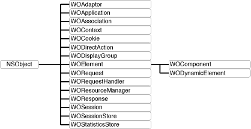

Introduction
The WebObjects class hierarchy is rooted in the Foundation Framework's NSObject class (see Figure 1). The remainder of the WebObjects Framework consists of several related groups of classes as well as a few individual classes.
Figure 1 The WebObjects Framework class hierarchy 
The more commonly-used classes within the WebObjects framework can be grouped as follows:
Server and Application Level Classes. WOAdaptor defines the interface for objects mediating the exchange of data between an HTTP server and a WebObjects application. WOApplication receives requests from the adaptor and initiates and coordinates the request-handling process, after which it returns a response to the adaptor.
Session Level Classes. WOSession encapsulates the state of a session; WOSession objects persiste between the cycles of the request-response loop. WOSessionStore provides the strategy or mechanism through which WOSession objects are made persistent.
Request Level Classes. WORequest stores essential data about an HTTP request, such as header information, form values, HTTP version, host and page name, and session, context, and sender IDs. WOResponse stores and allows the modification of HTTP response data, such as header information, status, and HTTP version. WOContext provides access to the objects involved in the current cycle, such as the current request, response, session, and application objects.
Page Level Classes. WOComponent represents and integral, reusable page (or portion of a page) for display in a web browser. WOElement declares the three request-handling methods: takeValuesFromRequest:inContext:, invokeActionForRequest:inContext:, and appendToResponse:inContext:. WODynamicElement is an abstract class for subclasses that generate particular dynamic elements. WOAssociation knows how to find and set a value by reference to a key.
Database Integration Level Classes. WODisplayGroup performs fetches, queries, creations, and deletions of records from one table in the database.